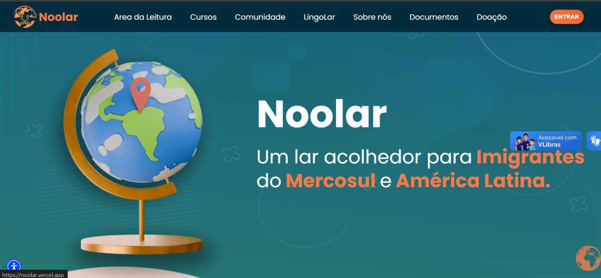
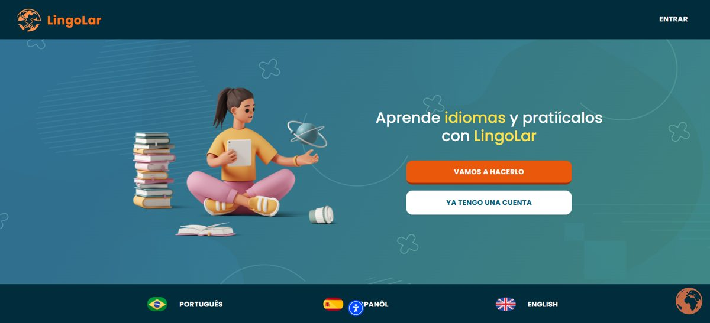
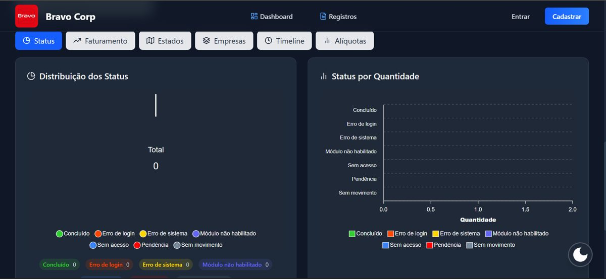
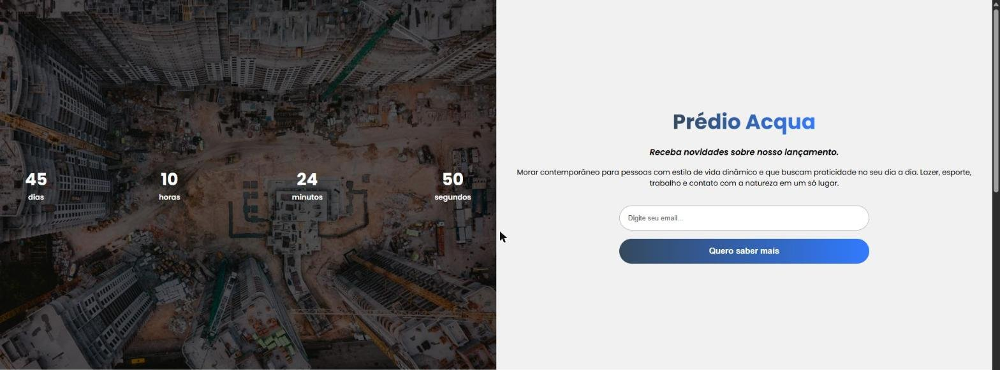
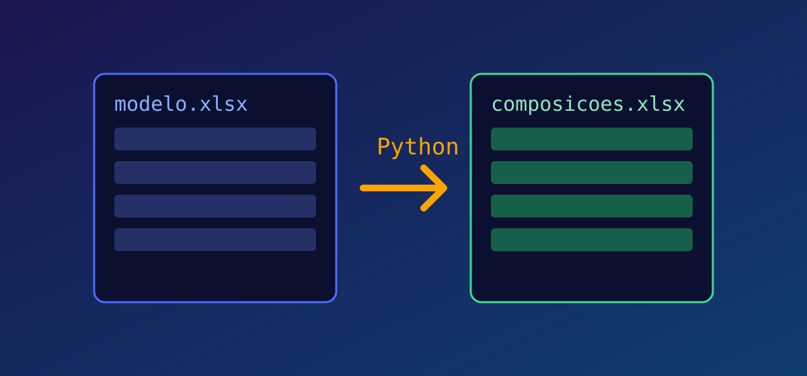
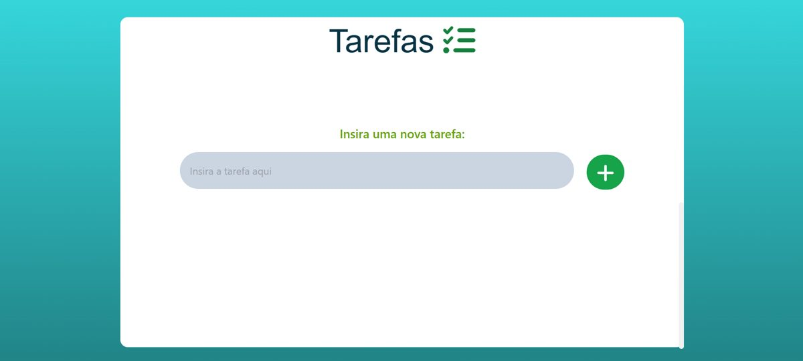

Sites e landing pages
Páginas rápidas, responsivas e fiéis ao design (inclusive a partir de protótipos do Figma), prontas para pequenos negócios e lançamentos.
Desenvolvedor Full Stack
Construo sites, aplicações web e automações que resolvem problemas reais, do banco de dados à interface. Trabalho no dia a dia com regras de negócio do setor fiscal de uma grande conta do varejo e transformo tarefas manuais em ferramentas que a equipe realmente usa.
Páginas rápidas, responsivas e fiéis ao design (inclusive a partir de protótipos do Figma), prontas para pequenos negócios e lançamentos.
Produtos completos com React, Next.js, TypeScript, Node.js e PostgreSQL: autenticação, painéis administrativos e CRUDs.
Geração de planilhas, renomeação e processamento de PDFs em lote e conferência assistida por IA, com Python, VBA e web.
Alguns trabalhos meus. Cada cartão indica o estágio do projeto.

Plataforma de apoio a imigrantes latino-americanos no Brasil: cursos de português, orientação e comunidade, com área de leitura e acessibilidade em Libras.

Plataforma de aprendizado de idiomas para imigrantes, em português, espanhol e inglês, com foco em prática do dia a dia.

Sistema de gestão baseado em operações CRUD, com autenticação, gerenciamento de membros e painel administrativo com gráficos de status.

Landing page de lançamento imobiliário construída a partir de um protótipo do Figma, com contagem regressiva, captação de e-mail e galeria de andamento da obra.

Ferramenta que gera automaticamente as composições da planilha de trabalho da minha equipe a partir de um modelo oficial, eliminando um processo manual e repetitivo.

Gerenciador de tarefas com componentes reativos e controle de estado no front-end.
Atuo no setor fiscal de uma grande conta do varejo, analisando regras de negócio e criando automações em VBA, Python e web: geração de planilhas mensais, renomeação em lote de PDFs e conferência de notas com IA (React e Next.js).
Product Owner do Verifica Aí, plataforma de letramento digital contra fake news e golpes, e desenvolvedor do LingoLar, plataforma de idiomas para imigrantes.
Engenharia de Computação (UNIVESP), bootcamp de desenvolvimento web SENAC/PROA e programa Transforme-se (Serasa Experian), onde fui eleito "Aluno nota 1000" pelos colegas.
Conte rapidamente o que você precisa e respondo com perguntas e um plano claro.